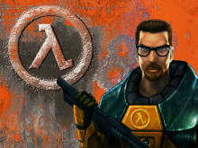

Half-Life (estilizado como HλLF-LIFE, meia-vida, em tradução livre) é uma série de jogos de tiro em primeira pessoa, que dividem uma história alternativa de ficção científica. Todos os jogos na série utilizam, ou o motor de jogo Gold Src, ou Source, são lineares, narrativos e de um jogador. O personagem principal da série é Gordon Freeman, um empregado da corporação Black Mesa Research Facility
